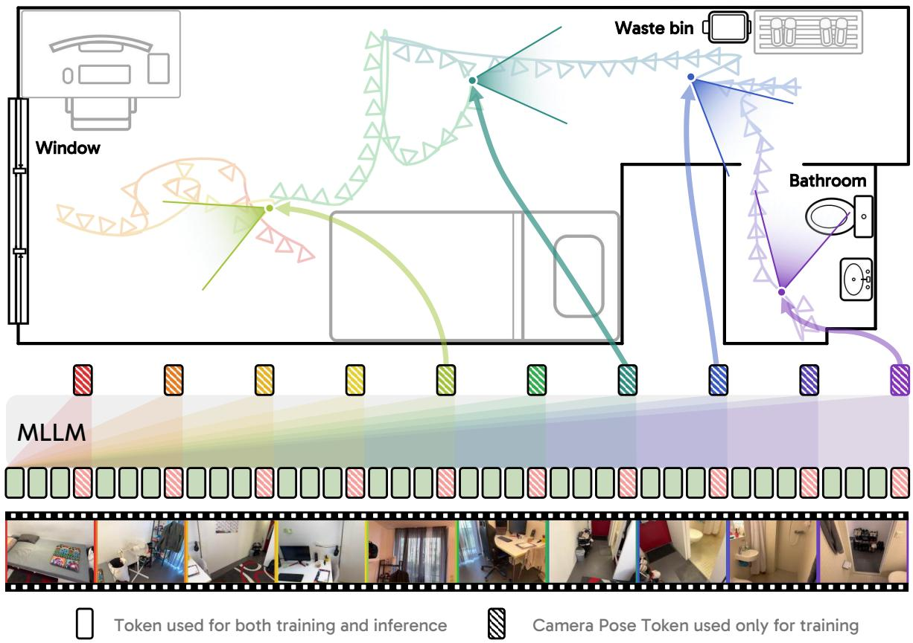

Figureure 2 · | Cambrian-P Architecture OverviewFigure 2 | Cambrian-P Architecture Overview. Cambrian-P imposes minimal modifications to current MLLM architectures, introducing only learnable pose tokens and a lightweight pose head. These tokens are marked with stripes, which indicate they are only included in training. The pose tokens are appended to visual tokens, while positioned before text embeddings.这张图概括 Cambrian-P 的整体方法流程。阅读时先看模块之间传递的训练信号，再看作者如何把目标拆成可优化的子问题。

Figureure 1 · | Cambrian-P illustration in video QAFigure 1 | Cambrian-P illustration in video QA. Cambrian-P equips the current video understanding paradigm with native camera pose prediction using an extra camera token per frame. Cambrian-P positions video frames into a shared spatial coordinate frame, then effectively models the underlying 3D world projected in video. Note that Cambrian-P only requires extra learnable pose tokens during training.这张图来自论文 PDF 的结构化抽取。当前用于辅助理解 Cambrian-P 的方法或实验，请结合正文精读段落一起看。